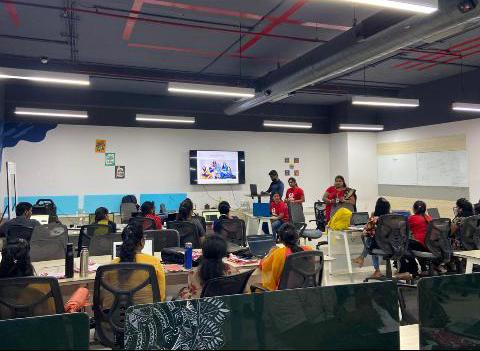

How I Get Into Guvi ?
I started Searching Full stack Web Courses in all Social Media platforms as now a days People target on Social Media Adverstising to sell their products. Luckily an Instagram Advertisement of Guvi popped out on my account saying " 100% Placement or Full Refund" which led me to Guvi or You can say trapped in Guvi.I Submitted a Form by clicking the advertisement Where My Journey to Guvi Begins.
Why Guvi ?
Iam a person who can judge a person easily by having a small coversation with them .Now Lets Get into my Journey,After Submitting Form , a few days later I got call From Deepak who is an empolyee of Guvi.He said all the advantages of this course and sent all details in whatsapp.The highlight part was the Fee of course which stunned me alot as it was too high compared to others.He also said we have EMI options also.I replied,I will discuss with my parents and let you know and awaited few days to get a call from him to hear that we are giving offers to you and reduce the cost of course which can prove that they are indeed of money as I have experienced this from many other companies.Unfortunately I didn't receive any calls from him which proves that "Greater the Quality Greater the Price" similar to Iphone products .I started researching about Guvi with my Professors and friends.I came to know that Guvi is tied up with our and many other colleges who brings companies to colleges for placements and also train the students for the placements.I started disturbing Deepak by asking many queries and I visited Guvi Several times where i realized that Guvi's Environment is filled with Peace.This made me to the conclusion that "This is what I'm searching For!" and Joined Guvi for weekend classes.

THE JOURNEY
In Day-1 , I was asked to have test on basics of coding by solving small problems to verify my current status of programming Knowledge.By God's Grace I passed it ( LOL 😂) and I was added to weekend batch with 15 members.A small Introduction about Guvi,Guvi- mentors ,Guvi's Course Plan was held.I can define the course plan in three phases like Starters,Main-Dishes and end with desserts.
PHASE-1
In Phase-1 the plan was to brush up the basics of python and Data Structures.As I heard that Data structure is in plan I was Messed up as I know How faculties of my college taught it and How I Hated it.The Mentor for this phase was Arun(Co-Founder Of GUVI).Though the class was taken for the whole class But still felt like it is being teached for every indiviual student. Arun took every single Niche of Data Structures which Made me to realize "oh! Data structure is not that shitty which I was thinking" and started learning Data Structures with excitements.We got certain assignments to be completed every week Which built Some Confidence on data Structures.This phase also includes solving problems in CODEKATA which consists of more than thousands of problems on several topics.This phase took about 1 month to complete.
PHASE-2
In Phase-2 the plan was to teach Javascript, Express.JS , Bootstrap , Node.JS , HTML , React , Post Gre SQL and MongoDB.The Mentor for this phase was DaniAkash (Employee of Guvi and Pick Your Trail).This phase can be further divided as two sub-phases like Main-courses having Biryani and Tandoori that is Developing a student website using Javascript, Express.Js, Bootsrap, Node.Js, Html, CSS, PostGRE SQl and the other one is Developing a BlogAPP, TodoList APP using react and MongoDB.
PHASE-2.1
In phase -2.1,Initially Dani made us to learn About GitHub and Git Commands which is a Distributed version Control System(DVCS) that means maintaining the various versions of the projects in both remote repositries(server) and local repositries(PC).Then He brushed up the basics of Javascript starting with the story "Evolution of Javascript" and then with ES6+ features of Javascript.After completing Es6+ features He started " How to develop Student website using Javascript, Express.Js, Bootsrap, Node.Js, Html, CSS, PostGRE SQl ".He used CodesandBox IDE to develop the website as it was responsive,Easy to connect with GitHub and dependencies can be added easily. It took almost 2 -3 months to complete the creation of student website.During this 2-3 months of journey I learnt tonnes of new Techs for developing a website .As a college Student I used to think HTML/CSS/JAVASCRIPT is more than enough to develop a website but actually these are just like a river Where huge OCEAN is yet to learn.After these 3 months I realized College is just for "FUN FUN FUN".
PHASE-2.2
In Phase-2.2,Dani took over the Introduction of MongoDb and the 'CRUD' operations of MongoDb.He moved on to 'React' which is a wonderful Framework for UI Designs developed by Facebook.He made us to develop a 'ToDoListAPP' Using 'React' and finally completed the Main-course by developing the BlogAPP using MongoDb and React.As a complementary he introduced react-native , X-State and PM2(It is a daemon process manager that will help you manage and keep your application online).
PHASE-3
This is my favorite Phase as I like desserts More.In this Phase an individual student is taken to mock interviews where you can find out the flaws of a student and train them accordingly.Once they find out the student is ready for Interview they setup Interviews from varioues companies where student has more chances to clear it as he/she is trained by Guvi.The wonderful journey of Guvi comes to an end When he/she Gets the Satisfied Job in a Product Based and highly reputed companies .